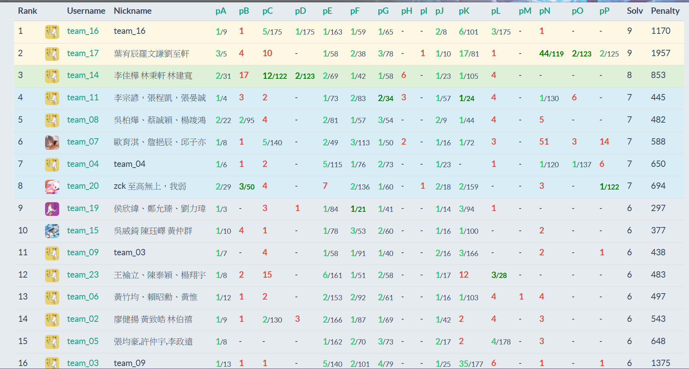

2021IOIC-Day1
這次有幸進到IOIC>< 遇到了好多電神。
課程
第一天早上是喵喵時間，基本上就是講故事還有來點心靈雞湯，雖然沒實際講知識但是我覺得我受益良多><。
下午的圖論課講師準備太多東西了，然後又在基礎的地方講太久，導致有趣的東西都沒上到。
點心晚餐都很好吃><。
晚上上機
在晚上的趣味賽中隊友其中一個是fhvirus，我們說好三人三分半開題，但開一題就說跟2020NPSC決賽pG很像，他就開始偷標頭檔。
這時我看計分板很多人過pA，去看發現就是floyd warshall的順序寫爛了，只要把下面鬆弛的code改掉就好。
繼續跟題，有一題是題幹一堆廢話，範測也是，猜一下梗懷疑一下後就過了。
後來fhvirus一直偷就偷成功，還拿了首殺，超電。
這時我們在第一名，好開心。
不過接下來就開題不順了，有一題code看很久才理解她在幹嘛，花了一點時間討論才得出hack測資。
還有一題是要構造某個東西，我們的構造方法是輸出一行有100個A，下一行有50個A。結果fhvirus就直接複製貼上，然後我們的Code就長這樣:
1 | cout << "AAAAAAAAAAA.....AAAA\n"; |
題解時還被拿出來講，結果不只我們一隊這樣做XD，講師：「你們不會用for嗎」
還有一題也是題敘很多廢話，隊友說會不會就是背包，我寫了然後wa，之後我就一直claim說那題不是背包，應該有其他梗。
賽後發現那題真的是背包，我只是dp的初始值沒設好。
因為有一題一直wa，比賽的第一頁又有說上傳前沒喊總召好帥就有可能會wa(#，所以fhvirus在某次上傳前喊了一聲很大聲的總召好帥，結果還是wa了QQ。
最後第12名收場。

住宿
新竹仔當然要來住宿啦><
室友是台中人，剛考完學測。感覺他是夯哥型的，問她有沒有看動畫他說沒有。(我不懂為啥我那麼大膽直接問有沒有看動畫)
後來她的確蠻早就睡了，導致我作息也被拉得有點早，不過這樣應該也好。
晚上因為晚點名後很無聊，我原本想說要去帶著房卡去走廊晃晃順便看有沒有其他人，然後一離開房間我就發現我忘記帶房卡了orz。
我也沒帶錢，但為了節省時間所以我就跟別人去7-11看看等等回房間後可以買什麼東西，同時我在dc群聊天時講到這件事，結果某個助教剛好也在dc群，結果就被抓回來了><
被抓回來後也就不敢再出去了，所以就乖乖睡覺。